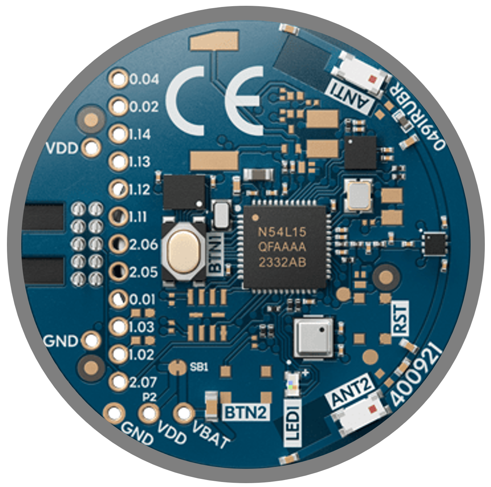
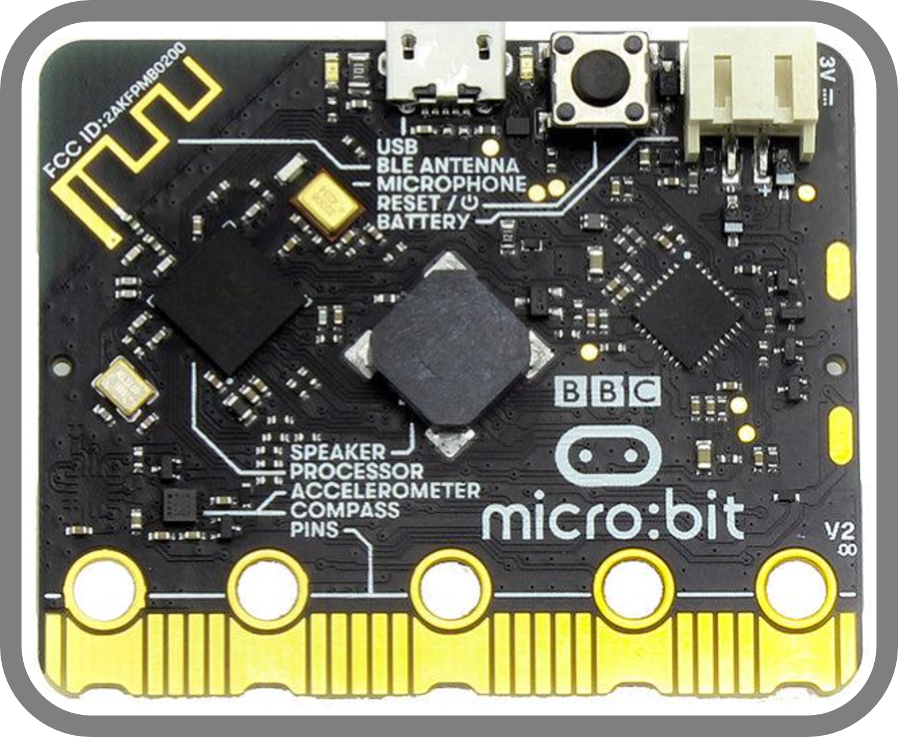

SB Hacks, meet The EM Foundation
The EM Foundation promotes, sustains, and evolves OpenEM technology for the embedded systems community.
Under our Tiny Code for Tiny Chips mantra, we created EMScript – a language that makes embedded SW simpler, smaller, and more energy-efficient.
Come build with us
We're proud to support SB Hacks 2027 !!
Join us in exploring the energy efficiency of embedded HW/SW – with real development boards, measurement tools, and hands-on mentoring.
Meet the nRF54L Tag

Nordic's nRF54L15 Tag packs an ultra-low-power wireless MCU into a compact, coin-cell-powered board with accessible GPIO pins for HW expansion.
Built-in motion sensors invite experiments with gestures, movement tracking, and wireless apps – all with energy efficiency in mind.
Meet the micro:bit V2

Designed to introduce children to coding, the BBC micro:bit V2 packs a Nordic nRF52833 MCU into a playful, programmable board.
A 5×5 LED display, buttons, motion sensors, microphone, speaker, and wireless radio offer plenty of ways to explore and invent.
Hack the HW/SW
Bring either board to life under EMScript, our novel programming language for embedded systems. Blink LEDs, read sensors, transmit packets, …
Share your work through the EMporium, our open-source nexus for all things EMScript. Contribute drivers and apps for others to build upon !!
Visualize the energy
EMScope measures energy consumption and scores efficiency with EMeralds. See how your HW/SW design choices affect energy use.
Or invent new ways to visualize energy ! Imagine a tiny gauge, colorful LEDs, or an intuitive display that helps anyone see where the µJoules go.
Keep hacking beyond January
Your hackathon project could grow into a semester-long effort, a senior capstone project, or even a graduate thesis. Don't stop exploring !!
Deepen your involvement with the EMporium and The EM Foundation – growing from contributor to collaborator to open-source maintainer.
Energy awareness for ages 8 – 80
The EM Foundation wants to make energy-aware coding accessible to makers of all ages – bringing this engineering discipline into the classroom.
Interested in STEM ? Help transform professional tooling into playful, intuitive learning – where even eight-year-olds can see the µJoules !
Talk to The EM Foundation
Have a project idea ? Then let's talk ! We welcome creative proposals from students eager to explore embedded systems in which every µJoule matters.
Our EMpowerment initiative offers seed grants for promising university and nonprofit projects which leverage the EMScript language.